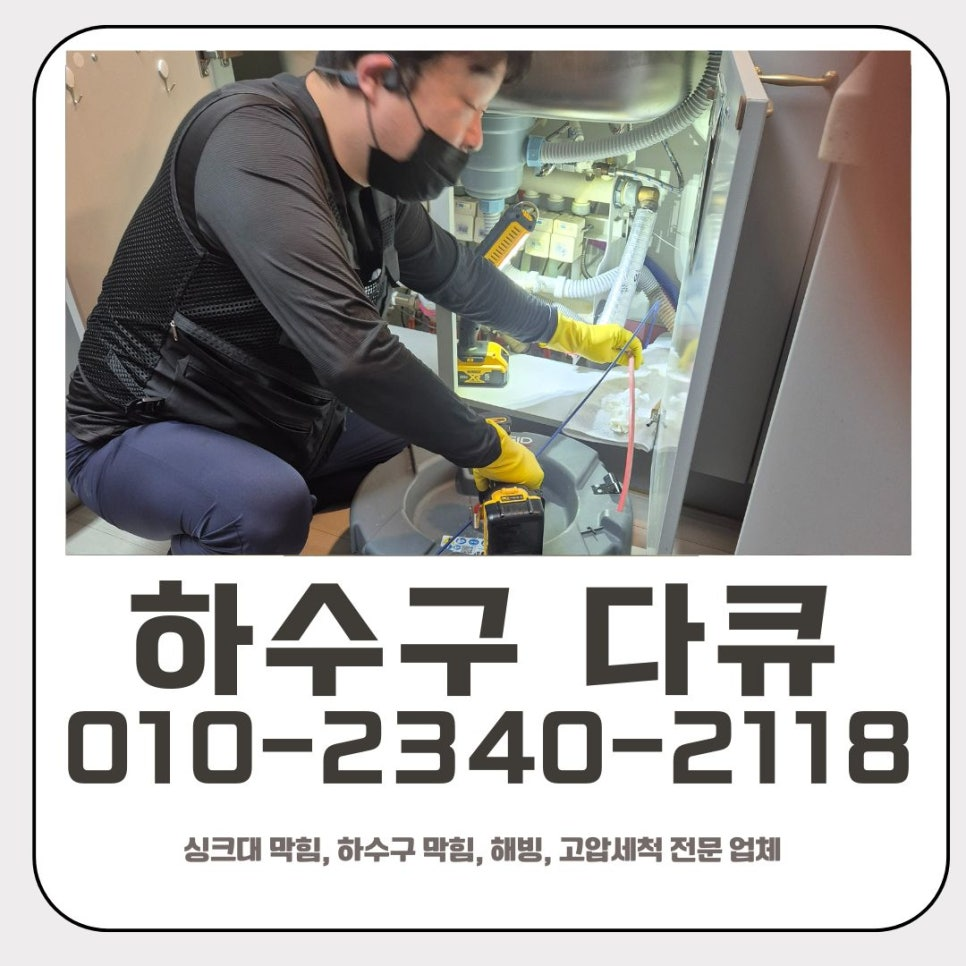
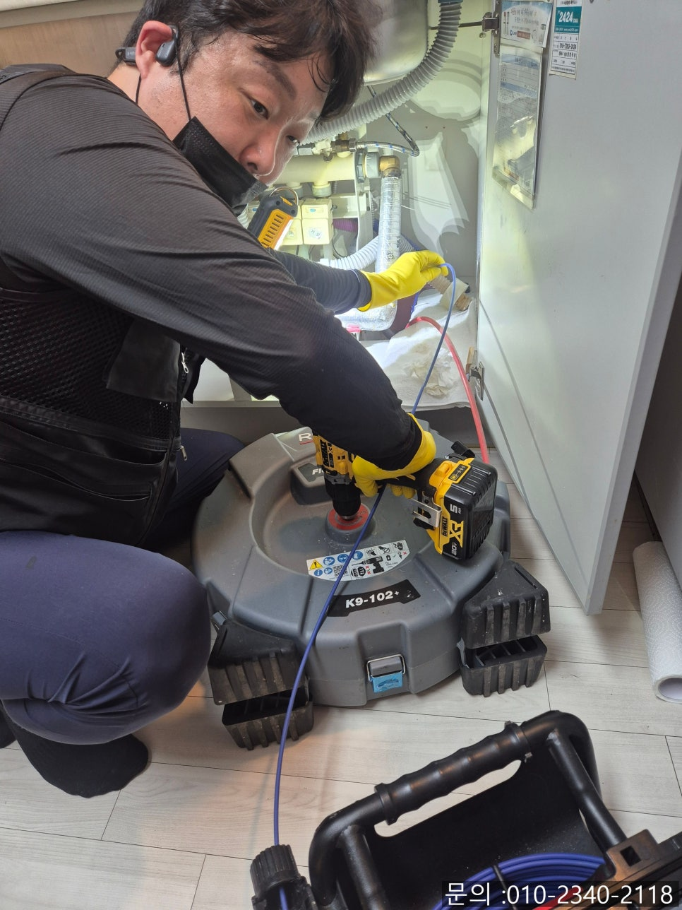
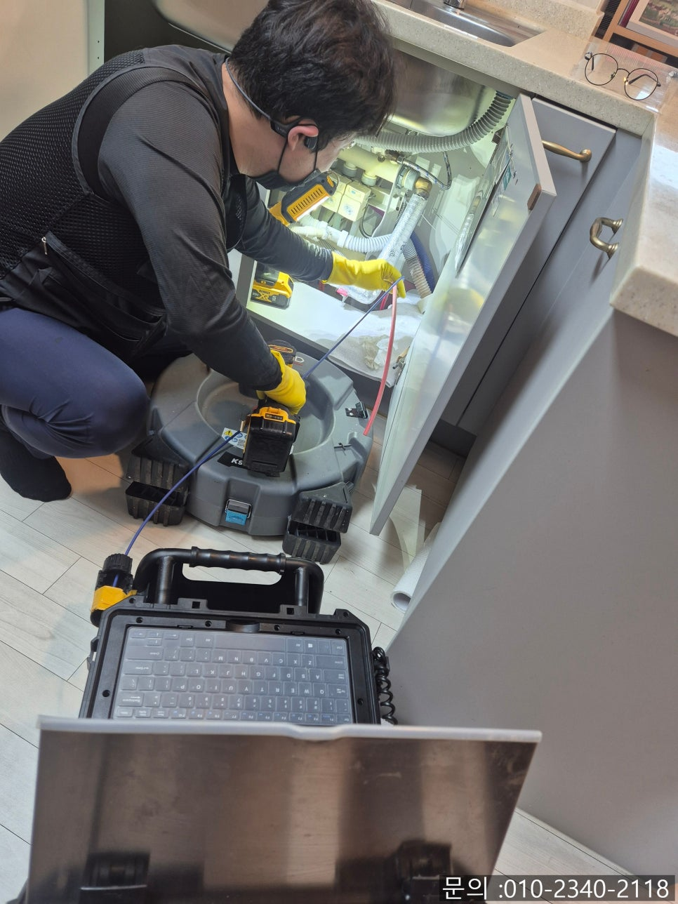
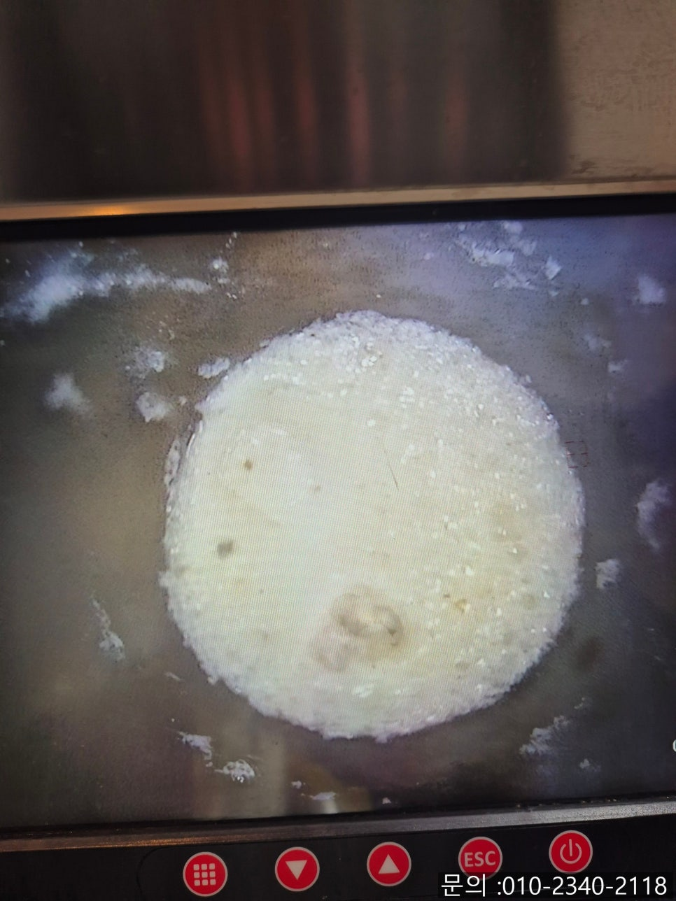
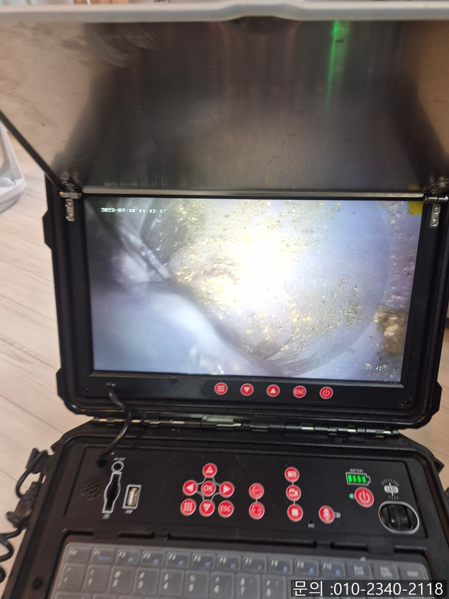
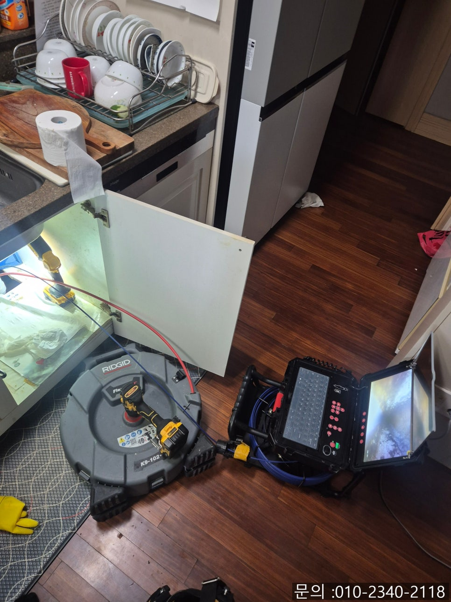
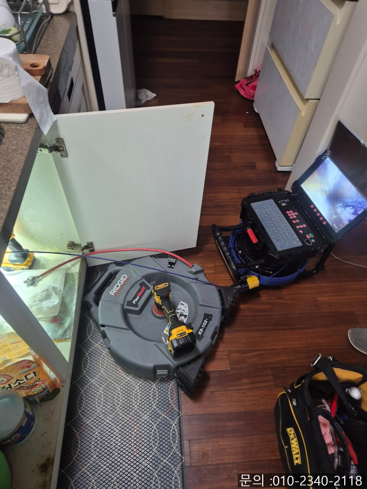

🏠 본오동 싱크대 막힘 안산 반월동 하수구 역류 해결 전문 업체
안산 싱크대막힘 전문 시공 후기

📋 작업 개요
- 위치: 안산
- 서비스 유형: 싱크대막힘, 하수구막힘, 배관막힘, 누수수리, 역류해결, 배관청소
- 작업 일시: 2025. 7. 21. 9:40
- 업체명: 하수구수사대 (010-5615-2118)
🔍 문제 상황
안녕하세요.
안산 반월동 하수구 역류 해결 전문 업체 하수구 다큐멘터리입니다.
물 사용이 많은 가정일수록 본오동 싱크대 막힘이나 하수구가 막히는 일은 언제든지 발생할 수 있답니다. 단순히 이물질이 걸렸거나, 물이 천천히 내려가는 정도의 막힘이라면 셀프로도 해결이 가능하겠지만 역류나 악취가 동반된다면 이미 내부 깊숙한 곳에 문제가 발생한 상활일 수도 있습니다.

🔎 원인 분석
💡 전문가 진단: 정밀 진단 장비를 사용하여 슬러지의 고착 여부를 판명하고 타격/세척 작업을 실시했습니다.
막힘 정도가 심각하다면 하수구 다큐멘터리처럼 전문 장비를 갖추고, 경험이 풍부한 업체의 도움을 받으시는 것이 중요합니다. 본오동 싱크대 막힘 현장 역시 고객님께서 혼자 해결해 보려고 해보시다가 실패하시고 하수구 다큐멘터리로 연락을 주셨어요.
배수구 클리너와 뜨거운 물을 여러 차례 부어 막힘을 해결해 보려고 하셨으나, 오히려 역류하는 상황까지 발생하셨다고 말씀하셨어요. 고객님의 불편을 빠르게 해결해 드리기 위해 안산 반월동 하수구 역류 해결 전문 업체인 하수구 다큐멘터리가 현장을 신속하게 방문 드리게 되었습니다.
막힘 원인을 정확하게 파악해 보기 위해 배관 내시경을 진입시켜 배관 내부를 점검해 보기로 했어요. 내시경 카메라는 사람이 들어갈 수 없는 좁은 관로를 케이블 선을 진입시켜 화면을 통해 내부 상황을 정확하게 알아볼 수 있는 전문 장비입니다.
싱크대 하 부장과 연결되어 있는 배수구 내부를 내시경 카메라로 확인해 본 결과 기름때와 슬러지가 가득 차 있는 것을 확인할 수 있었어요.

🔧 작업 과정
안산 반월동 하수구 역류 해결 전문 업체 하수구 다큐는 고객님께 카메라 화면을 보여드리고, 배관 상태에 대해 자세하게 설명해 드렸어요. 그 후, 고객님과 상의 끝에 싱크대 배수구 배관을 가득 채우고 있는 슬러지와 기름때를 제거하기 위해 플렉스 샤프트 장비를 활용기로 결정하였어요.
샤프트 장비는 노즐 끝에 달려있는 갈퀴 모양의 체인이 강한 회전력으로 배관 내부의 기름때와 슬러지를 마치 믹서기처럼 갈아주면서 제거하는 방식으로 작동하게 됩니다.
내시경 장비로 배관 내부의 오염도를 체크하면서 이물질을 갈아내주기 시작하였어요. 여러 차례 반복적으로 작업을 진행하자 기름 슬러지가 제거되는 모습을 확인할 수 있었어요.
갈려진 이물질은 석션기를 통해 깨끗하게 흡입해내주어, 배관 내부에 남아있지 않도록 하였어요. 내시경 카메라로 깨끗해진 내부를 점검하였고, 물을 흘려보내면서 막힘과 누수 없이 시원하게 잘 내려가는 것을 확인하고 작업을 마무리할 수 있었어요.
하수구 다큐멘터리는 불필요한 작업으로 과잉 견적 없이, 내시경 점검부터 전문 장비를 활용하여 깨끗하고 깔끔하게 청소하고 해결해 드리니 걱정 마세요.


✅ 작업 완료
하수구나 본오동 싱크대 막힘으로 불편을 겪고 계시다면, 고민하지 마시고 믿고 맡기실 수 있는 하수구 다큐와 함께 빠르고 확실하게 해결하시길 바랄게요.
경기도 오산시 오산로160번길 15 201-L16호




⚠️ 베란다 누수 및 방수 관리 방법
- ✅ 비가 많이 올 때 창틀 주변이나 아래층 천장에 얼룩이 생기는지 정기적으로 확인해 보세요.
- ✅ 우수관 주변 실리콘 마감이 들뜨거나 깨진 틈새가 있는지 손상 여부를 수시로 체크하세요.
- ✅ 베란다 바닥 타일의 줄눈(메지)이 소실되면 그 틈으로 물이 침투하여 누수가 유발됩니다.
- ✅ 누수 의심 증상 발견 시 방치하면 아래층 손실이 커지므로 즉시 전문가의 진단을 받으십시오.
💡 핵심 정리
- 확실한 장비 작업(내시경 점검 및 샤프트 스케일링)으로 원인을 뿌리 뽑습니다.
- 작업 후 1년 이내에 동일한 부위 재발 시 100% 무상 A/S 서비스를 보장합니다.
- 서울 · 경기 · 인천 전 지역에 24시간 언제든 긴급 출동할 수 있도록 항시 대기 중입니다.
❓ 자주 묻는 질문 (FAQ)
🚨 안산 싱크대막힘 문제로 고민이신가요?
정확한 원인 진단과 확실한 시공으로 재발 없는 해결을 약속드립니다.
24시간 긴급 출동 | 서울 · 경기 · 인천 전지역 | 1년 내 재발 시 무상 A/S